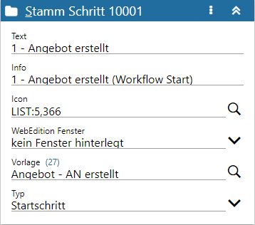
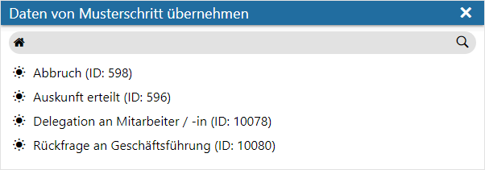
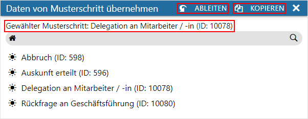
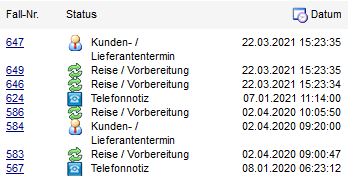
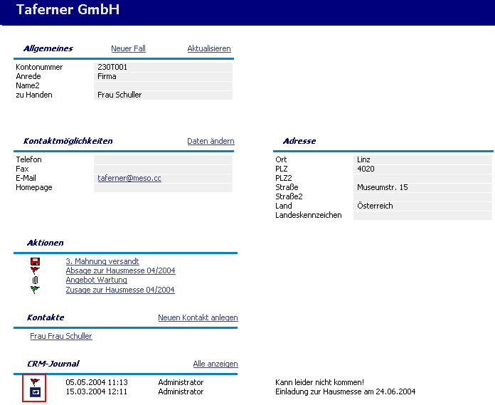

Definitionsbereich - Stamm
Im Bereich "Stamm" des Definitionsbereichs können die Stamminformationen wie Name, Beschreibung usw. zum jeweiligen Workflow-Objekt hinterlegt werden.

Ø Kopfzeile
In der Kopfzeile des Stamms wird neben der Bezeichnung "Stamm" auch die Nummer des aktuell gewählten Workflow-Objektes angezeigt. Das kann die Nummer der Workflowgruppe, die Nummer eines Start-, Workflow-, Neben- bzw. Endschrittes oder einer CRM-Aktion sei.
Hinweis
Handelt es sich um eine Neuanlage, so wird zunächst eine temporäre fortlaufende Nummer angezeigt, welche beim Speichern in eine richtige Workflow-Nummer gewandelt wird. Zusätzlich werden Neuanlagen mit einem + gekennzeichnet, nicht gespeicherte Änderungen mit einem *.
Achtung
Handelt es sich um einen Workflow-, End- oder Nebenschritt (siehe auch Feld "Typ"), welcher von einem Musterschritt abgeleitet wurde, so wird diese Verbindung ebenfalls in der Kopfzeile dargestellt.
Ø  Menü
Menü
Durch Anwahl des Menüs werden, abhängig vom aktuell gewählten Workflow-Objekt, weitere Funktionen zur Verfügung gestellt:
ü Entsperren / Sperren
Handelt es
sich um einen Workflow-, End- oder Nebenschritt (siehe auch Feld "Typ"), welcher
von einem Musterschritt abgeleitet wurde, so kann hier definiert werden, ob die
Feldinhalte fix vom Musterschritt kommen oder editierbar sein sollen.
Hinweis
Das Feld "Typ" kann immer editiert werden.
ü Maximieren / Minimieren
Bei
einem Maximieren werden die Stammdaten als einziger Bereich in der Definition
angezeigt, bzw. bei einem Minimieren wieder alle Bereiche in der Definition.
ü Schritt duplizieren
Handelt es
sich um einen Workflow-, End- oder Nebenschritt (siehe auch Feld "Typ"), so kann
mit Hilfe dieser Auswahl eine Kopie des aktuellen Schritts erzeugt werden.
Hierbei werden bestehende Kanten und ggfs. vorhandene Ableitungen nicht
kopiert.
ü Daten von Musterschritt
übernehmen
Handelt es sich um einen Workflow-, End- oder Nebenschritt (siehe
auch Feld "Typ"), so können alle Einstellungen des Schritts von einem
sogenannten Musterschritt stammen.
Hierfür öffnet sich zunächst das Fenster
"Daten von Musterschritt kopieren", in welchem alle zur Verfügung stehenden
Musterschritte aufgeführt werden.

Nach der Auswahl des Musterschritts werden die Buttons "Ableiten" und "Kopieren" zur Verfügung gestellt.
Bei wird eine Verknüpfung zwischen Musterschritt und Ausgangsschritt erstellt, d.h. alle Einstellungen stammen vom Musterschritt und Änderungen am Musterschritt wirken sich direkt im abgeleitetet Schritt aus.
Bei hingegen werden alle Einstellungen aus dem Musterschritt in den Ausgangsschritt kopiert. Es existiert nach dem Kopieren keine Verbindung mehr zwischen den Schritten.

ü In Musterschritt
umwandeln
Handelt es sich um einen Workflow-, End- oder Nebenschritt (siehe
auch Feld "Typ"), so kann mit Hilfe dieser Auswahl ein neuer Musterschritt
erzeugt werden. Hierbei wird der aktuelle Schritt in einen Musterschritt kopiert
und direkt zwischen Ausgangsschritt und neuen Musterschritt eine Verbindung
(d.h. eine Ableitung) geschaffen.
ü In Nebenschritt umwandeln
Mit
dieser Auswahl können sogenannte Folgeschritte bzw. Endschritte in Nebenschritte
umgewandelt werden. Hierbei werden eventuell vorhandene Verbindungen (die
sogenannten "Kanten") zu anderen Schritten entfernt und der Typ des Schrittes
entsprechend angepasst (nähere Informationen entnehmen Sie bitte der
Beschreibung des Felds "Typ" in diesem Kapitel).
ü Schritt wieder
aktivieren
Handelt es sich um einen inaktiven Schritt, so kann dieser mit
Hilfe der Auswahl "Schritt wieder aktiviert" aktiviert werden.
ü Gruppe zurücksetzen / Schritt
zurücksetzen
Sobald eine Änderung in der aktuellen Gruppen bzw. im aktuellen
Schritt getätigt wurde, so steht das Zurücksetzen zur Verfügung. Hierüber werden
alle getätigten Änderungen verworfen und der zuletzt gespeicherte Zustand
wiederhergestellt.
ü Workflow zurücksetzen
Handelt
es sich um den Startschritt, so steht die Auswahl "Workflow zurücksetzen" zur
Verfügung, sobald eine Änderung innerhalb des Workflows getätigt wurde. Durch
Anwahl werden alle Änderungen im Workflow verworfen und der zuletzt gespeicherte
Zustand wiederhergestellt.
ü Alles öffnen / Alles
schließen
Durch Anwahl einer dieser Einträge werden alle Bereiche im
Definitionsbereich geöffnet bzw. geschlossen.
Ø Text / Info
Name und Beschreibung des Objekts können individuell vergeben werden.
Ø Icon
Dem Workflow-Objekt (Workflowgruppe bzw. Schritt) kann ein Symbol zugeordnet werden, an dem sich optisch der Status eines Falles erkennen lässt. Als Icons können jene verwendet werden die in der WinLine-Datenbank am Server vorhanden sind, bzw. jene die in den "Bilderlisten" zur Verfügung stehen. Zur Suche nach Bildern in der WinLine-Datenbank steht die Matchcode-Funktion zur Verfügung.
Hinweis
Bilder aus der Bilderliste können über die Syntax "LIST:x,y" (x = Bilderliste; y = Bildnummer) hinterlegt werden.
Beispiel

Hinweis - WEBEdition
Für Aktionsschritte muss ein Symbol angegeben werden, um die Aktion bzw. einen möglichen vorhandenen Journaleintrag im Stammdatenfenster der jeweiligen Stammdatentypen aufrufen zu können:

Ø WebEdition Fenster
Aus der Auswahlliste kann ein so genanntes Workflowfenster gewählt werden, welches in weiterer Folge zur Eingabe verschiedener Informationen verwendet werden kann. Das hier angegebene Fenster wird jedoch nur herangezogen, wenn der Workflowschritt/Aktionsschritt aus der WebEdition aufgerufen wird!
Hinweis
Mittels WEBCTK besteht die Möglichkeit sich eigene Fenster hierfür anzulegen (mit Fensternummern über 8000) oder vorhandene Fenster anzupassen. Diese stehen dann ebenfalls in der Auswahlliste zur Verfügung.
Ø Vorlage
Um CRM-Schritte aus der WinLine (WinLine CRM) auszuführen, werden sogenannte Vorlagen benötigt. Diese sogenannten "CRM-Vorlagen" geben die möglichen Eingabefelder vor und können auch für Vorbelegungen sorgen.
Bestehende Vorlagen können über die Autovervollständigung oder den Matchcode gesucht und ausgewählt werden. Zur gewählten Vorlage wird die Vorlagennummer in Klammern neben dem Namen des Eingabefelds angezeigt.
Hinweis
Die Anlage von CRM-Vorlagen findet in der WinLine START (Vorlagen - Vorlagen Anlage - Individuelle Formulare - Bereich "Bewegungsdaten - CRM") statt.
Ø Typ
An dieser Stelle wird der Typ des CRM-Schritts angezeigt und ist, abhängig vom Typ, editierbar.
Aktionsschritt / Startschritt
Wenn in der Ansichtsebene Startschritt- und Aktionsübersicht eine Neuanlage stattfindet, so kann sich entschieden werden, ob eine Aktion oder ein Workflow erzeugt werden soll.
ü Aktionsschritt
Bei einem
Aktionsschritt handelt es sich um einen einstufigen CRM-Eintrag, d.h. es gibt
keine "Folgetätigkeit", wodurch eine Aktion auch nie "abgeschlossen" sein kann.
Des Weiteren werden bei Aktionen keine Berechtigungsprüfungen durchgeführt.
ü Startschritt (Workflow bzw.
CRM-Prozess)
Bei einem Workflow handelt es sich um einen mehrstufigen
CRM-Eintrag mit z.B. "Delegationen", "Weiterleitungen" und "Berechtigungen". Der
Startschritt bildet hierbei den ersten Schritt des gesamten Prozesses.
Schritt
Handelt es sich um einen Schritt innerhalt eines Workflows, so kann der Typ des Schritts jederzeit angepasst werden.
ü Workflowschritt
Bei einem
Workflowschritt handelt es sich um einen sogenannten Folgeschritt eines
Workflows. Durch Linien, den sogenannten "Kanten", werden die Verbindungen
untereinander angezeigt.
Hinweis
Workflowschritte können in einem Workflow für den weiteren Prozess auch auf sich selber verweisen, d.h. es können Ablaufschleifen gebildet werden.
ü Nebenschritt
Bei einem
Nebenschritt handelt es sich um einen Schritt, der grundsätzlich an jeder Stelle
des Workflows ausgeführt werden kann.
Die Besonderheit des Nebenschritts ist
dabei, dass dieser den aktuellen Status des Workflows nicht verändert, d.h. der
Workflow steht noch immer in jenem Status, von dem aus der Nebenschritt
gestartet wurde.
Hinweis
Mittels einer Negativliste kann zusätzlich festgelegt werden, nach welchem CRM-Schritt ein Nebenschritt nicht ausgeführt werden darf.
ü Endschritt
Nach einem
Endschritt können innerhalb der Workflow Editors keine weiteren Schritte mehr
gesetzt werden. Zusätzlich werden CRM-Fälle bei Ausführen eines Endschritts
automatisch als "abgeschlossen" gekennzeichnet. Das Kennzeichen für einen
abgeschlossenen CRM-Fall kann u.a. im LIST-Assistenten (bei den CRM-Listen)
abgefragt werden. Zusätzlich kann in den INFO-Modulen (Bereich "CRM") aufgrund
dieses Kennzeichens selektiert werden.
AND- und XOR-Blöcke
Neben normalen Schritten kann es sich in einem Workflow auch um einen Abarbeitungsblock handeln. Die Art des Blocks kann über den Typ angepasst werden.
ü "AND Split" / "AND Join"
Mit
einem "AND"-Block kann eine parallele Ausführung mehrerer Pfade definiert
werden. Der "AND"-Block startet mit einem sogenannten "AND Split" und endet mit
einem "AND Join". Dadurch ergibt sich, dass es mehrere "aktive letzte" Schritte
geben kann. Erst wenn alle Schritte nach dem "AND Split" beim "AND Join"
angelangt sind, können die weiteren Schritte ausgeführt werden.
Die möglichen
Workflowschritte innerhalb des "AND"-Blocks müssen auch aus diesem Bereich
abgeleitet / erstellt werden. Workflowschritte die "außerhalb" des Blocks
angelegt werden, können nicht in den Block eingefügt werden.
Hinweis
Generell können neben Workflowschritten auch weitere "AND"-Blöcke oder "XOR"-Blöcke in einem "AND"-Block vorkommen. Damit die einzelnen Objekte der jeweiligen Blöcke besser erkennbar sind, erhalten alle Bestandteile eines Blocks die identische farbliche Umrandung. Zusätzlich können alle Objekte eines Blocks über einen Klick mit der rechten Maustaste direkt markiert werden.
ü "XOR Split" / "XOR Join"
Mit
einem "XOR"-Block (entweder/oder) muss die Entscheidung getroffen werden,
welcher Weg im Workflow eingeschlagen werden soll. Der "XOR"-Block startet mit
einem sogenannten "XOR Split" und endet mit einem "XOR Join". Jener Pfad, der
nach dem "XOR Split" gewählt wurde (und nur dieser), muss bis zum "XOR Join"
geführt werden, bis die entsprechenden Folgeschritt (nach dem "XOR Join")
ausgeführt werden können.
Die möglichen Workflowschritte innerhalb des
"XOR"-Blocks müssen auch aus diesem Bereich abgeleitet / erstellt werden.
Workflowschritte die "außerhalb" des Blocks angelegt werden, können nicht in den
Block eingefügt werden.
Hinweis
Generell können neben Workflowschritten auch weitere "XOR"-Blöcke oder "AND"-Blöcke in einem "XOR"-Block vorkommen. Damit die einzelnen Objekte der jeweiligen Blöcke besser erkennbar sind, erhalten alle Bestandteile eines Blocks die identische farbliche Umrandung. Zusätzlich können alle Objekte eines Blocks über einen Klick mit der rechten Maustaste direkt markiert werden.
Musterschritte
Bei Musterschritten handelt es sich um einen Schritt, welcher die (Ausgangs)-Basis für einen Workflow-, Neben- oder Endschritt bildet. Nähere Informationen entnehmen Sie bitte dem Kapitel Definitionsbereich - Musterschritt: Auswirkungen.